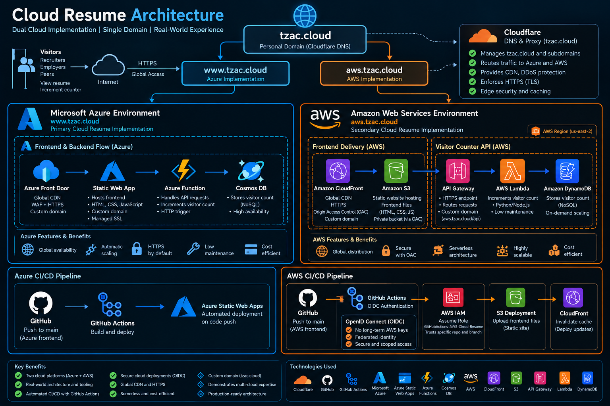

I'm Zac Stevens, a retired U.S. Marine Corps Chief Warrant Officer with more than 20 years of experience leading technical teams, managing operational risk, and delivering cybersecurity capabilities. My career spans defensive cyberspace operations, nation-state investigations, and technical program management at Microsoft. I specialize in navigating ambiguity, connecting technical and executive stakeholders, and driving complex initiatives forward. This website also showcases my hands-on learning through the Cloud Resume Challenge, using Azure and AWS serverless services, security controls, and deployment automation.
Two cloud platforms, one portfolio. Explore my hands-on Cloud Resume Challenge implementations using Microsoft Azure and Amazon Web Services, with automated deployments through GitHub Actions.

View Azure Resume | View AWS Resume | Azure GitHub Repository
Active
Technical Program Management · Risk Management · Cross-Functional Leadership · Executive Engagement
Threat Hunting · Incident Response · Threat Intelligence · Defensive Cyberspace Operations
Microsoft Azure · AWS · Serverless Architecture · GitHub Actions · CI/CD
Power BI · KQL · Operational Reporting · Security Automation
Senior Technical Program Manager, GHOST | September 2025 to September 2026
Defensive Cyberspace Weapons Officer / Team Technical Director | June 2022 to August 2025
Cyberspace Operations Chief | May 2020 to June 2022
Cyberspace Operations Chief | December 2016 to May 2020
Earlier Leadership Assignments | 2005 to 2016
Bachelor of Science in Computer Networks and Cybersecurity • 2023
Associate of Arts in General Studies • 2012